User manual: stock, sales and branch reports for Cream Restaurant & Catering Services
we serve beyond your desire
Edition 1 · October 2026 Prepared by Thirdsan Enterprises
About this manual
Cream POS records stock and sales for each of your branches online, so the owner can see how every branch is trading without visiting it. This manual shows, step by step, how each person uses the app. Every step was carried out in the real app on a new, empty system before it was written down.
What the system does
Stock. Food is bought at Kira, sent to Lugogo and Town, and confirmed when it arrives. Each branch buys its own drinks.
Sales. Cashiers record plates and drinks, and how the customer paid.
Customer accounts. Prepaid and credit accounts that go down as meals are charged.
Monitoring. The owner sees each branch's takings, staff, drinks and stock, and the items that need re-ordering.
What this edition does not cover
Online payment. The app does not take money. MoMo, Airtel and LPO only record how the customer paid. Collect the money as you do today, then record the sale.
Catering orders and the Reports menu. These are in the app but are not described in this edition.
Who does what
Role
Sees
Can do
Owner (admin)
All branches
Everything: set up staff, branches, items and prices; buy and transfer stock; watch every branch. The owner's menu has no Sell screen.
Store manager
Own branch
Sell, confirm deliveries, buy the branch's drinks, record stock used, take deposits, see the branch's report.
Cashier
Own branch
Sell, take deposits, see stock and "My Day". Cannot change prices or stock levels.
Storekeeper
Own branch
Uses the same screens as a cashier. Buying food and sending transfers are done by the owner.
Menu names, buttons and messages are shown in this style exactly as they appear on screen.
Contents
1Getting started
2Set up your business (owner, once)
3Stocking: how stock moves
4Why does it say Re-Order?
5Selling
6Customer accounts
7My Day
8The owner's view of each branch
9Problems and answers
10Quick reference
1. Getting started
Sign inEveryone
Open the Cream app.
Type your Phone number and Password.
Tap Sign in.
The owner lands on Branches. Managers and cashiers land on Sell for their own branch.
To sign out, tap the arrow icon at the top right.
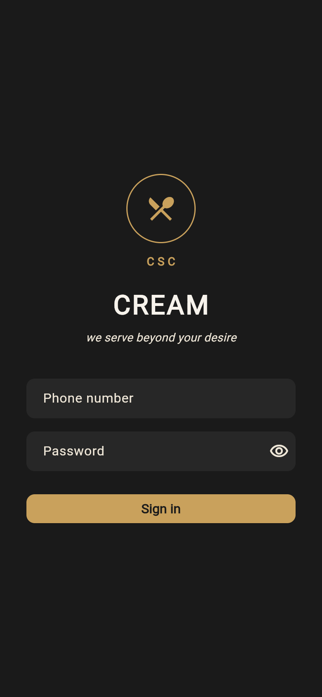
The sign-in screen.
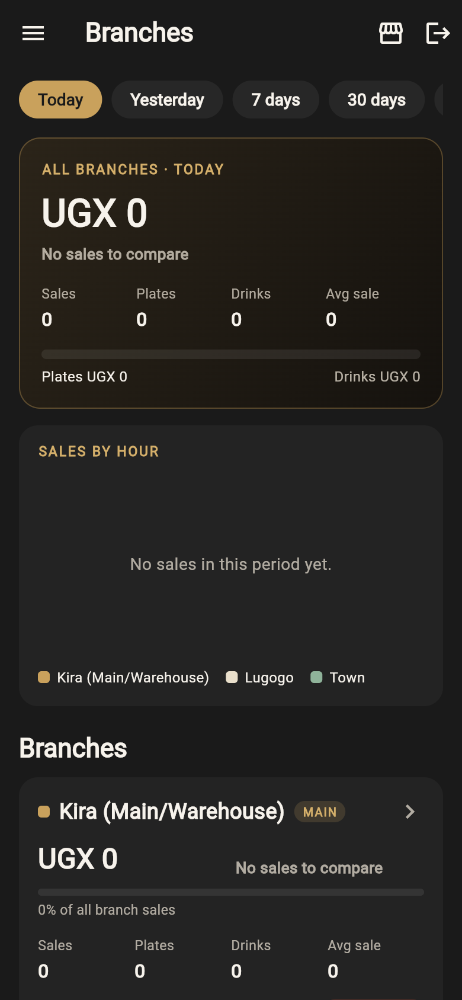
What the owner sees after signing in.
Careful
The first owner account is phone 0700000000 with password password. Everyone who has read this manual knows it. Change it before anything else (see 1.1).
1.1 Change a passwordOwner
The owner can set a new password for anyone, including themselves, and this is also how you help someone who has forgotten theirs.
Open the menu (three lines, top left) and tap Settings.
Open the Users tab and tap the person.
Type a new password in New password. It needs at least 8 characters.
Tap Save changes.
The person can sign in with the new password straight away.
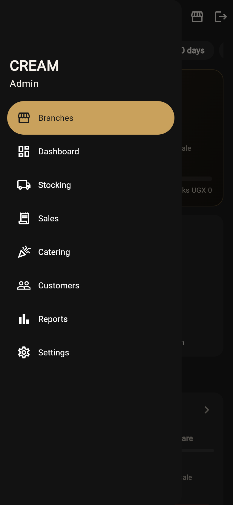
The owner's menu.
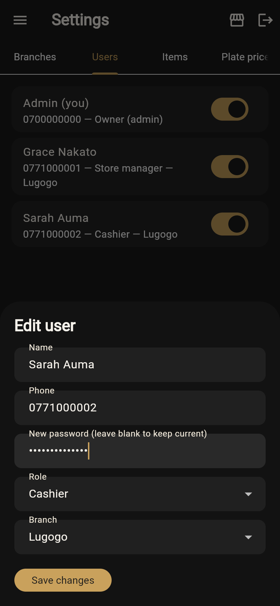
Setting a new password.
2. Set up your business (owner, once)
2.1 Add your staffOwner
Settings → Users → New user.
Type the person's Name, Phone (they sign in with it) and a Password of at least 8 characters.
Choose their Role and their Branch.
Tap Create user.
Make at least one Cashier and one Store manager for each branch. Give each person their own account so every sale and delivery shows who did it.
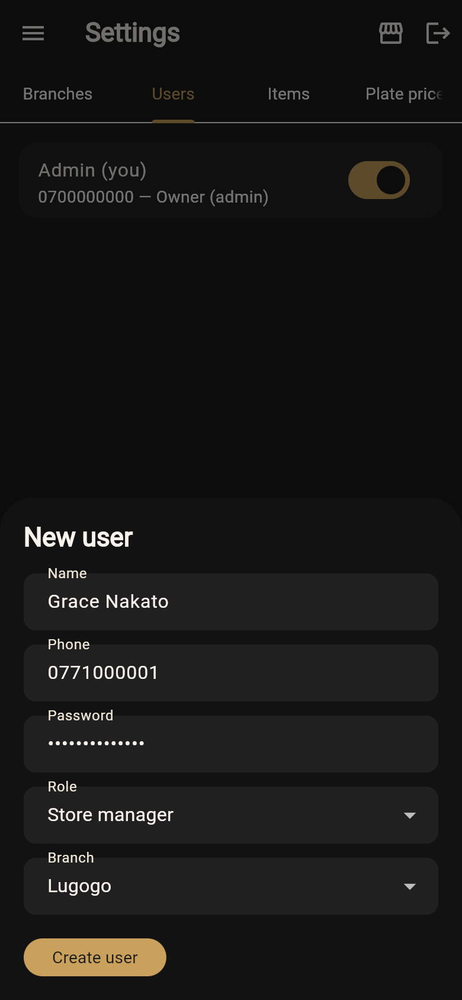
Adding a store manager for Lugogo.
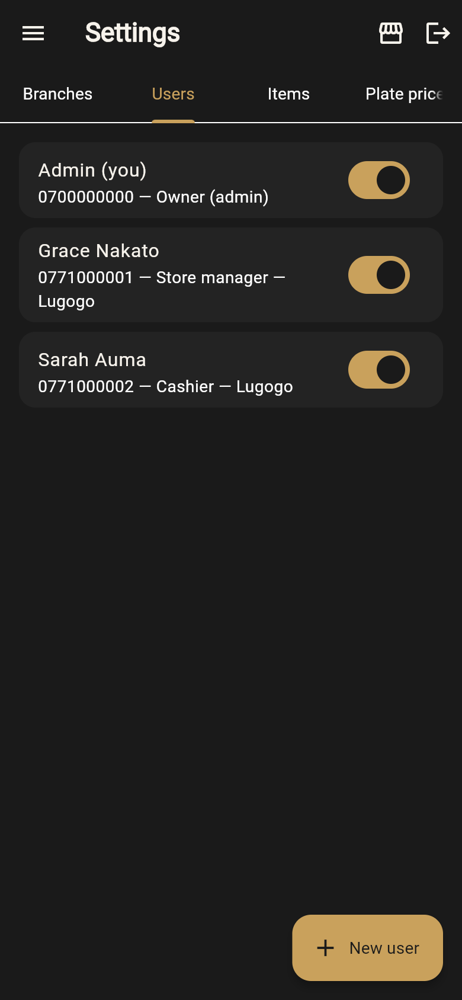
The staff list.
Good to know
The owner account cannot ring up sales. Sales are recorded by the cashier or manager of a branch, so the sales are tied to that branch and that person. To try the system, create a cashier account and sign in with it.
2.2 Add a branchOwner
Settings → Branches → New branch.
Type a Name and a short Code, then tap Create.
The new branch gets the full list of items automatically, each at 0 in stock. Then add its staff (2.1).
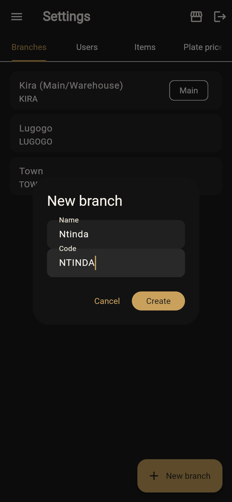
Adding a branch.
2.3 Set the plate priceOwner
Settings → Plate price.
Type the New price and tap Update price.
Cashiers see the new price on their next sale. Sales already recorded keep the price they were made at. Each drink has its own price, shown on the Sell screen.
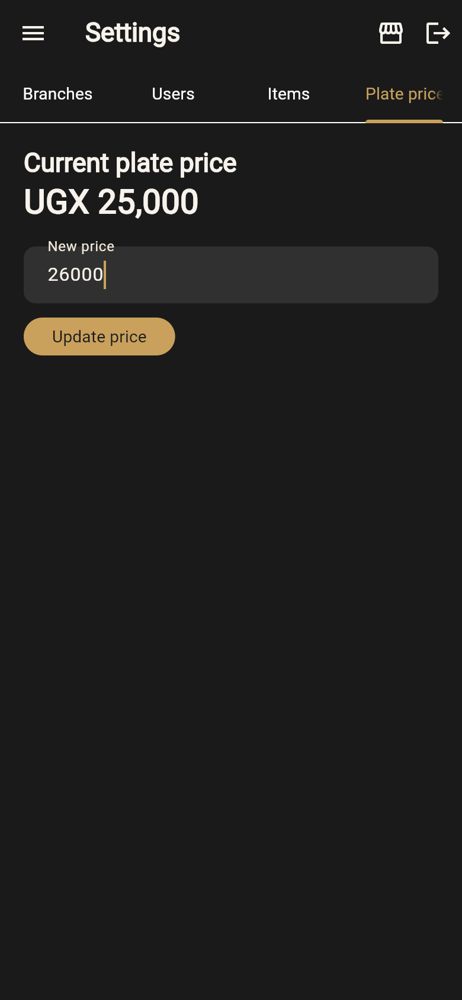
Changing the plate price.
2.4 Set re-order levelsOwner
The re-order level is the amount at which an item is flagged Re-Order (see chapter 4). Every item starts at 10, except items you add yourself, which start at 0 unless you type a level.
Settings → Items.
Tap Re-order level next to the item.
Choose the Branch, type the level, and tap Save.
Each branch has its own level for each item. Set it to what you would want to be warned at: for rice it might be 25 kg, for water 20 bottles.
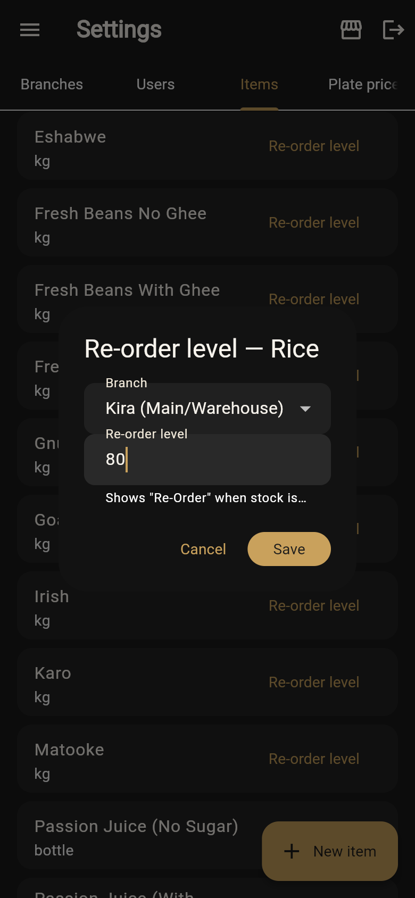
Setting the level for Rice at Kira.
3. Stocking: how stock moves
1. BuyThe owner records food bought at Kira.
→
2. SendThe owner sends items from Kira to Lugogo or Town with a Transfer. Kira's stock drops at once.
→
3. ConfirmThe branch manager confirms what actually arrived. Only then does it count at the branch.
Drinks are different. Each branch buys its own drinks, so the branch (or the owner on its behalf) records the purchase directly. Nothing is sent from Kira.
Using stock. Selling a drink takes it off the branch's stock automatically. For food, the manager records what the kitchen used (3.7).
3.1 Buy food at KiraOwner
Open Stocking → Purchase.
Tap the Item box, type a few letters (for example Ri) and tap Rice.
Type the Quantity purchased, for example 100.
Tap Record purchase.
A message at the bottom confirms the new stock, for example Rice at Kira (Main/Warehouse): 100 kg in stock (Stock Sufficient). If an error message appears instead, the purchase was not recorded; read it and correct the entry.
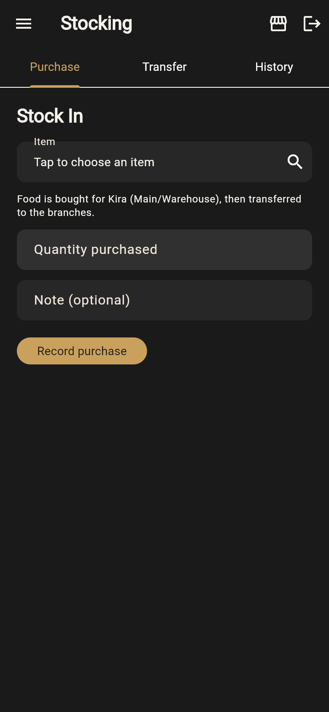
Stocking, Purchase tab.
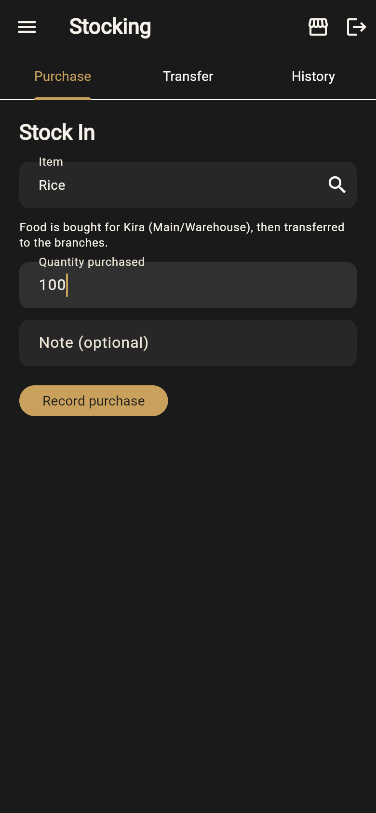
Item and quantity filled in.The confirmation message.
3.2 Add an item that is not on the listOwner
In Purchase, tap the Item box and tap Add a new item.
Type the Item name, its unit (kg, litre, piece) and, if you like, the Re-order level.
Tap Add item, then record the purchase as in 3.1.
The new item appears at every branch straight away, at 0, so it can be bought, sent and tracked everywhere.
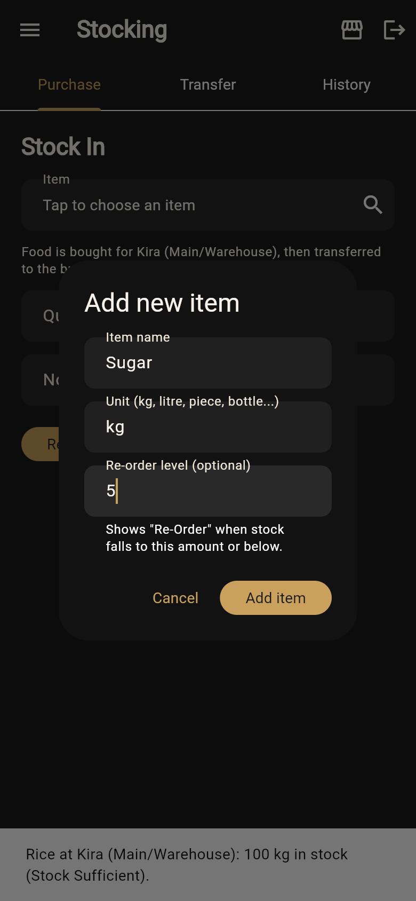
Adding Sugar with a re-order level of 5.
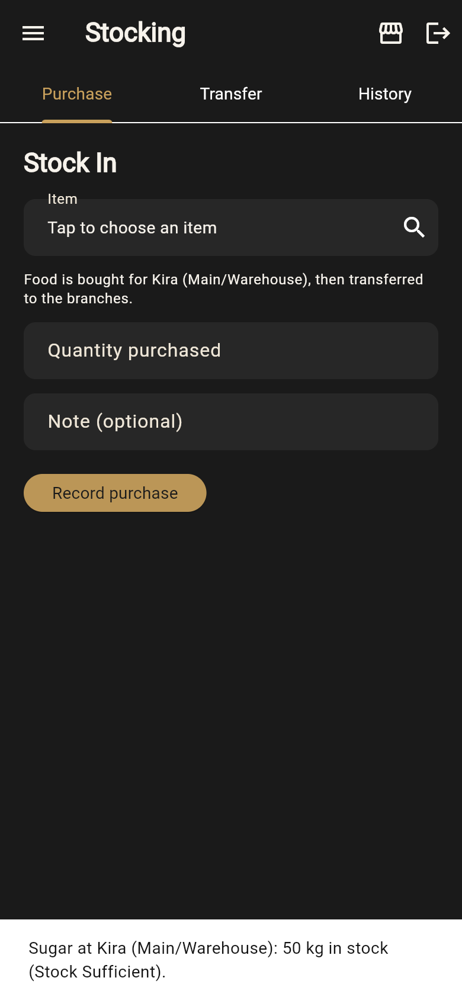
Sugar bought: 50 kg at Kira.
3.3 Send stock to a branchOwner
Stocking → Transfer.
Choose To branch.
Choose an Item; the list shows only what Kira has, with the amount available. Type the Qty.
Tap Add item for each extra item.
Tap Dispatch transfer. The message Transfer dispatched. confirms it.
You cannot send more than Kira has. The app says how much is available.
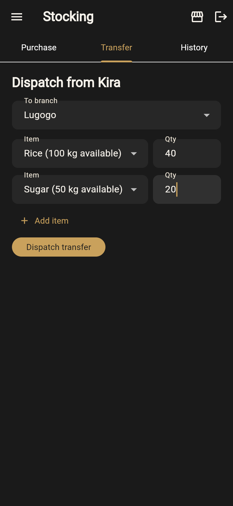
Sending 40 kg of Rice and 20 kg of Sugar to Lugogo.
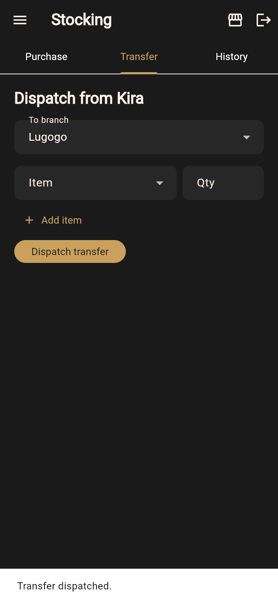
Transfer dispatched.
3.4 Confirm a deliveryStore manager
Open Stock → Incoming Transfers.
Each item shows what Kira sent. Under Received, leave the number if it matches what arrived, or type what you actually counted.
Tap Confirm receipt.
Stock is added at your branch for exactly the amounts you entered. If a number differs from what was sent, the transfer is marked as a shortfall and the owner sees it under Short on arrival in the branch report. Be honest here: it is how losses on the road are found.
A delivery can only be confirmed once.
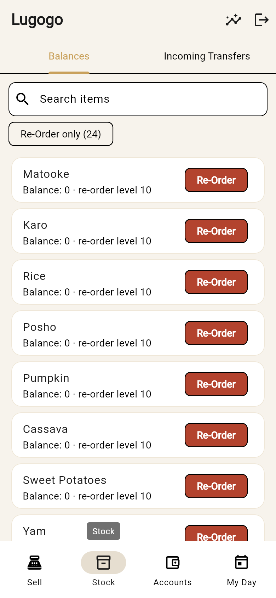
Stock, Incoming Transfers.
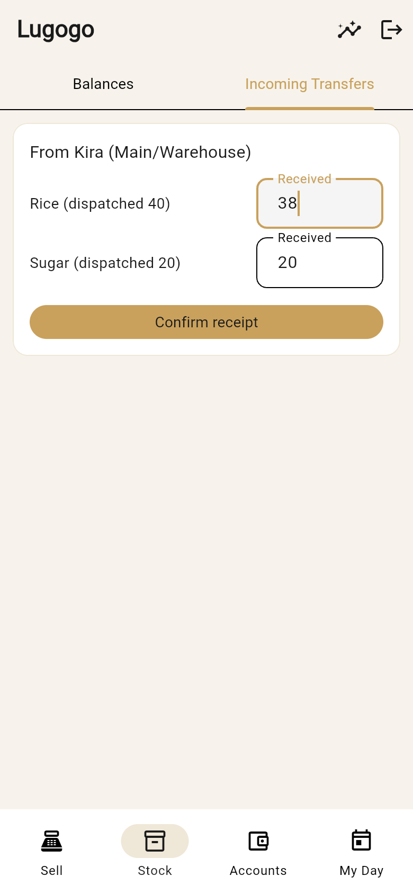
Rice counted as 38 of 40.
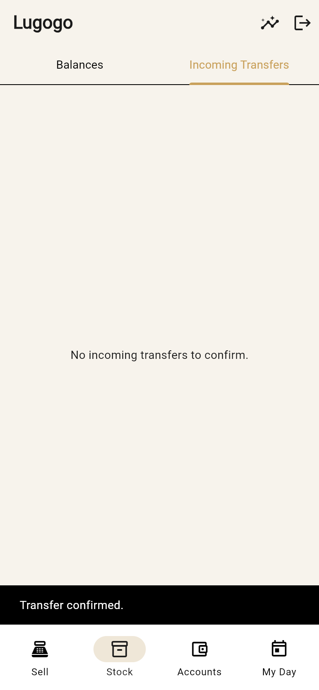
Transfer confirmed.
3.5 Buy drinks for a branchStore manager · Owner
The manager:
Open Stock → Balances and type the drink in Search items.
Tap the cart icon (Buy stock) on that drink.
Type the Quantity bought and tap Save.
The owner can do the same for any branch: Stocking → Purchase, choose the drink, then choose Bought for which branch.
Food cannot be bought at a branch; the app will refuse. Food comes from Kira.
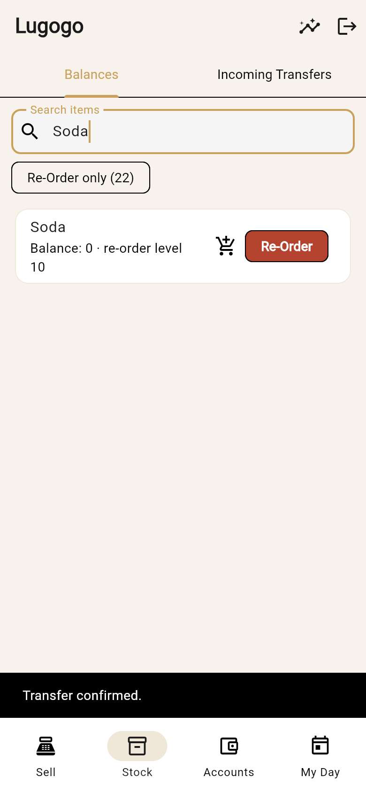
Finding Soda.
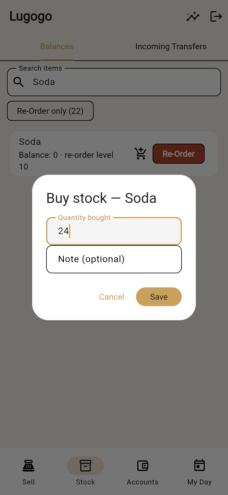
Buying 24 bottles.
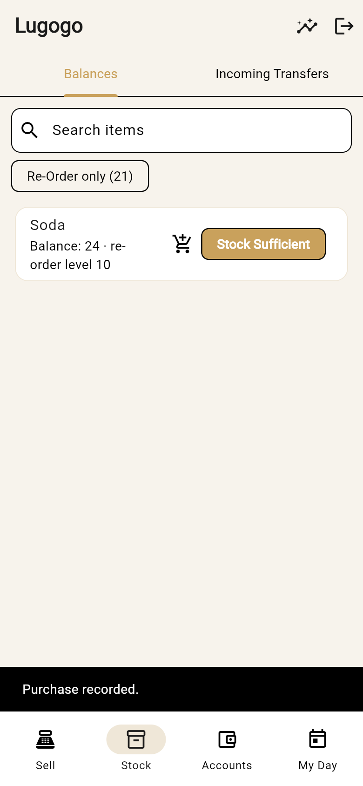
Soda: 24 in stock.
3.6 Record what the kitchen usedStore manager · Cashier
Stock → Balances. Find the item with Search items and tap its name.
Type the Quantity used and tap Save. Consumption logged. confirms it.
Do this at the end of each day for the food that was cooked, so the balance stays true. Drinks do not need this: selling them takes them off the stock.
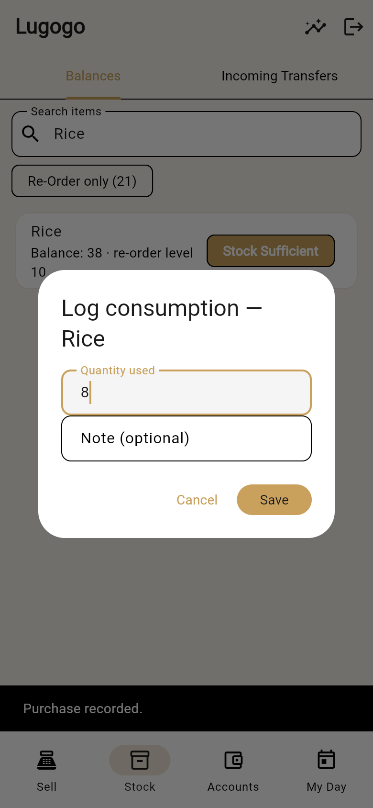
Rice used: 8 kg.
3.7 See the historyOwner
Stocking → History lists every movement, newest first: Bought, Sent to a branch, Received from Kira, Used / sold and Corrected, with the branch and time.
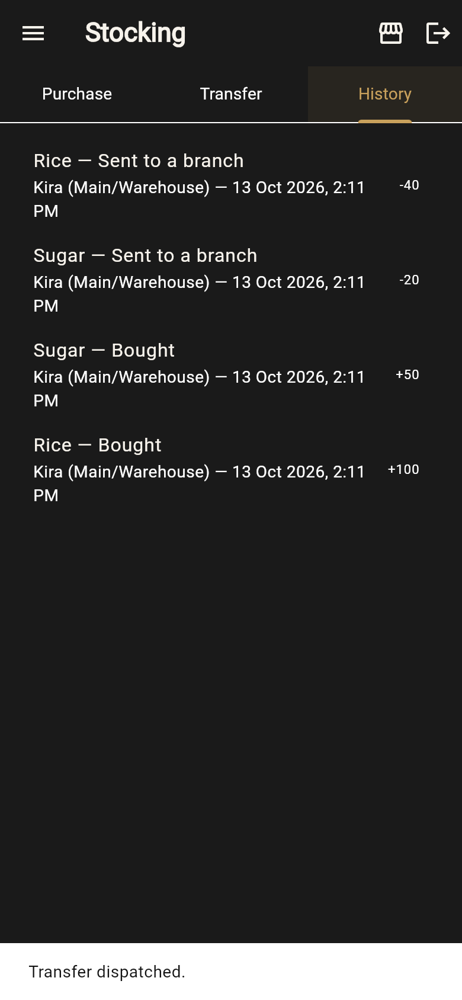
Stock history.
4. Why does it say Re-Order?
An item shows Re-Order when the stock at that branch is at or below its re-order level. That is all it means. It is worked out for each item at each branch separately, so there are four common reasons for a Re-Order that surprises people.
You see
Why
What to do
Everything says Re-Order on a new system
Nothing has been bought yet. Every item is at 0, and the default level is 10.
Buy the items (3.1). Items you do not use can be left; they are only a list.
You bought rice at Kira, but Lugogo still says Re-Order
Buying fills Kira only. Each branch has its own stock.
Send it to Lugogo with a Transfer (3.3), and have the manager confirm it (3.4).
You sent a transfer, but the branch still says Re-Order
The branch has not confirmed it yet. Until then the stock is on its way, not at the branch.
Ask the manager to open Stock → Incoming Transfers and confirm.
You bought 5, and it still says Re-Order
5 is at or below the level of 10.
Buy more, or change the level (2.4).
The Stock screen of a branch can show only the items that need re-ordering: tap the Re-Order only filter above the list. On the owner's Dashboard, the alerts are grouped by branch; tap a branch to see its items, the most depleted first.
Good to know
Screens show the figures as they were when you opened them. Open the screen again (or pull the list down to refresh) after someone else has bought or confirmed stock.
5. Selling
5.1 Ring up a saleCashier · Store manager
Open Sell. The plate price is at the top.
Use + and − to set the number of plates.
Tap a drink to add one. Tap it again for each extra. The number on its corner shows how many. Tap the number to take one away.
Check the Total.
Choose the Payment method (see the table below).
Tap Complete sale. Sale completed. confirms it.
The screen resets to one plate for the next customer. A sale can be plates only, drinks only, or both.
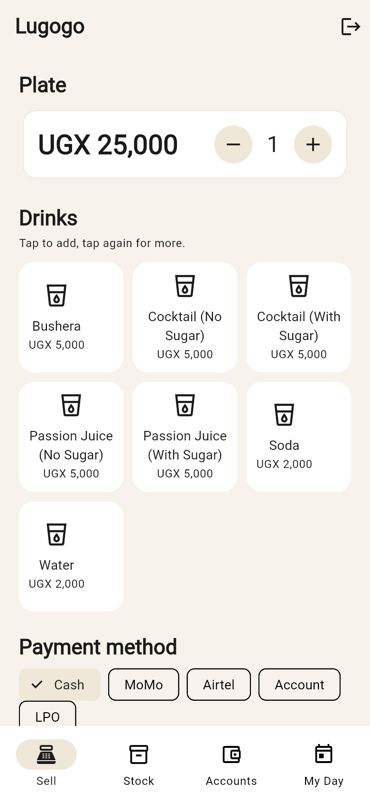
The Sell screen.
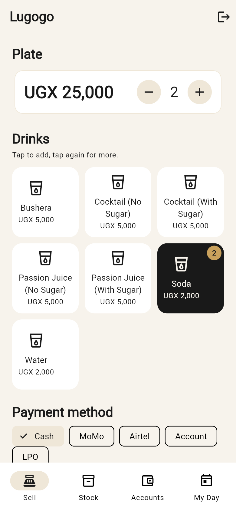
2 plates and 2 Sodas.
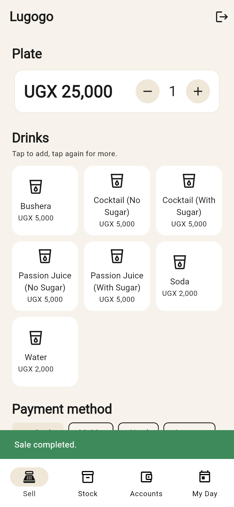
Sale completed.
Payment method
Use it when
Cash
The customer paid in cash.
MoMo / Airtel
The customer paid by mobile money. Confirm the money arrived on your phone first; the app only records the method.
Account
The meal is charged to a customer's prepaid, credit or LPO account (5.2).
LPO
A one-off sale covered by a purchase order.
5.2 Charge a sale to a customer accountCashier · Store manager
Build the sale as in 5.1 and choose Account as the payment method.
Tap Select customer, type part of the name or phone number in Search by name or phone, and tap the customer.
The screen shows what they can spend, for example Available: UGX 400,000. If the total is more, it warns you before you try.
Tap Complete sale.
A prepaid account cannot go below zero. A credit account cannot go past its limit. The app refuses a sale that would break either rule.
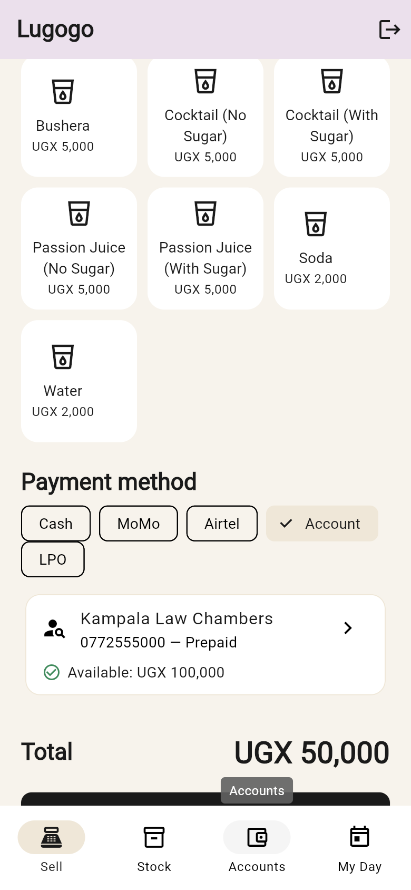
Customer chosen; balance shown.Charged to the account.
Note
A drink can still be sold when the app shows none in stock. The drink's balance then goes below zero (for example -3) and it shows Re-Order until the purchase is recorded. If you see negative numbers, record the missing purchase (3.5).
6. Customer accounts
Type
How it works
Prepaid
The customer pays in advance. Each meal is deducted. The balance can never go below zero.
Credit
The customer eats now and pays later, up to a credit limit you set. The balance shows what they owe.
LPO
For organisations that pay against a purchase order. Top up with the LPO amount; meals draw it down.
6.1 Create an accountOwner
Open Customers → New customer.
Type the Name and Phone, and choose Prepaid, Credit or LPO. For Credit, type the Credit limit.
Tap Create account.
The list can be filtered with the All, Prepaid, Credit and LPO buttons, or searched by name or phone.
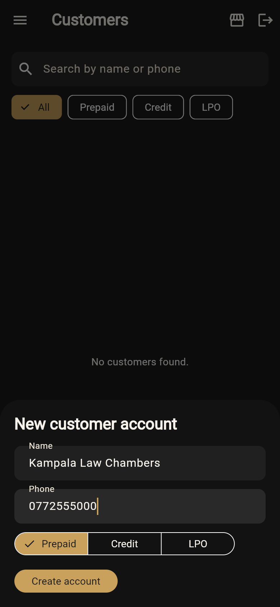
Creating an account.
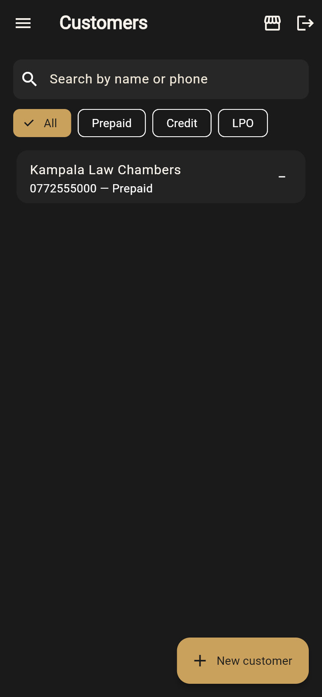
The customer list.
6.2 Take a depositCashier · Store manager
Open Accounts and tap the customer.
Type the Deposit amount, and a reference such as the MoMo transaction number in Reference/note.
Tap Deposit. The Balance updates and the deposit appears in the Statement below as a Top-up.
Take the money first, then record it. The app does not collect money.
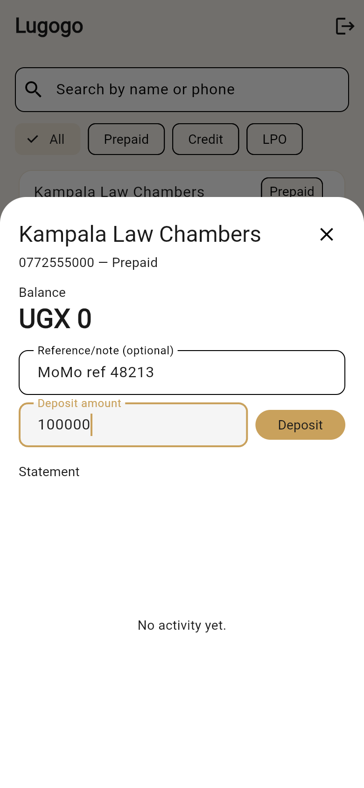
Entering a deposit.
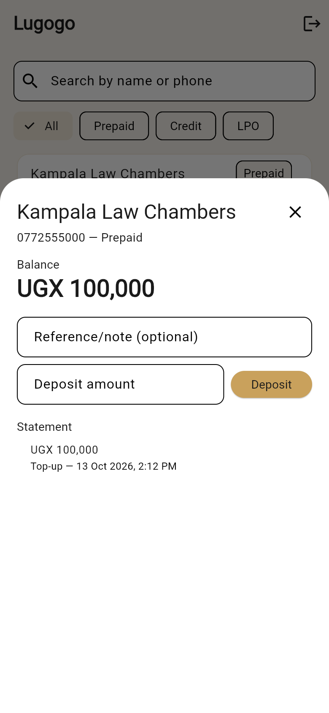
Balance: UGX 100,000.
6.3 See an account's statementOwner · Manager · Cashier
Open the customer (Accounts, or Customers for the owner). The Statement lists every Top-up and Meal charged with its date, newest first. Meals appear as negative amounts.
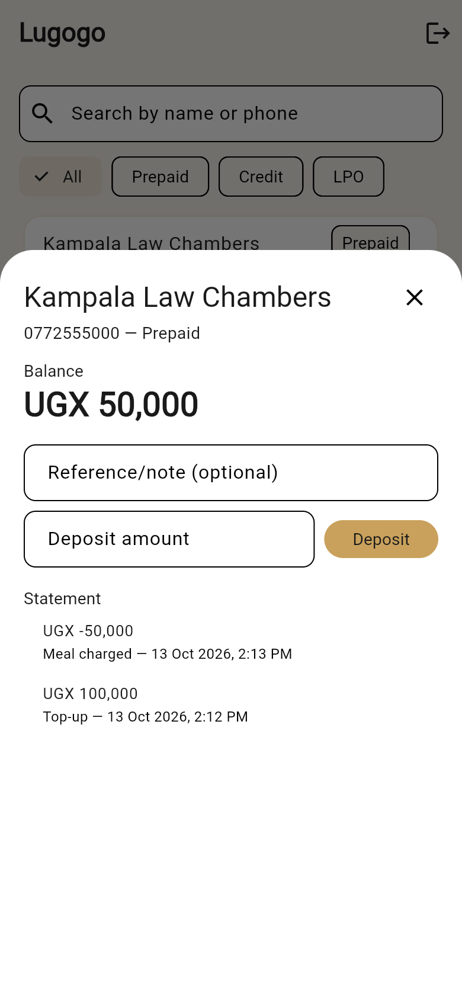
A top-up and a meal charged.
7. My Day
End-of-shift checkCashier · Store manager
Open My Day to see your branch's sales for today: the total, how many plates, plate and drink revenue, and the amount for each payment method.
At closing, compare the Cash line with the cash in the drawer. MoMo and Airtel should match the messages on your phone. Account sales are not cash; they are charged to customers.
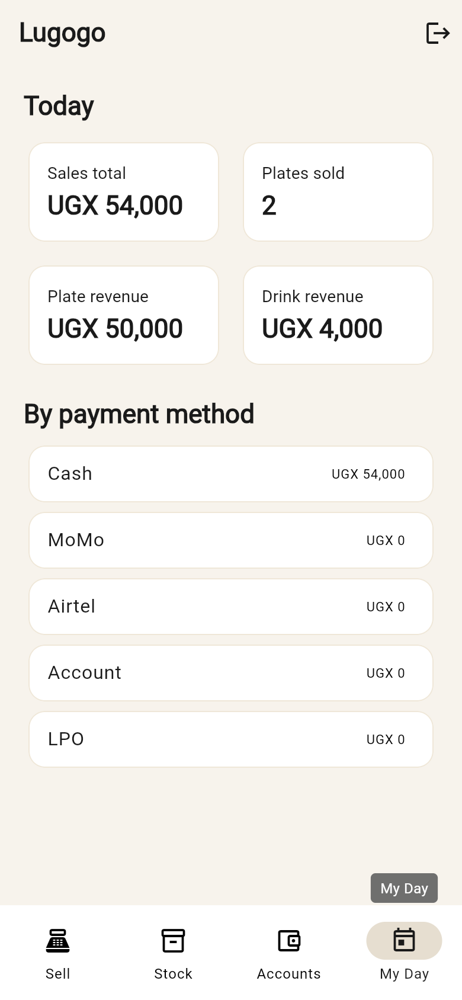
My Day after a UGX 54,000 cash sale.
8. The owner's view of each branch
8.1 BranchesOwner
Branches is the first screen. Choose a period at the top: Today, Yesterday, 7 days, 30 days or This month.
The big number is the takings of all branches for the period, with the change against the period just before it.
The chart shows when the money came in, by hour for one day and by day for longer periods. Each branch has its own colour.
Each branch card shows its takings, its share of the total, the number of sales, plates, drinks and the average sale, the time of its last sale (a quiet branch stands out), and how many items it needs to re-order.
Catering is not included here; these are daily outlet sales only.
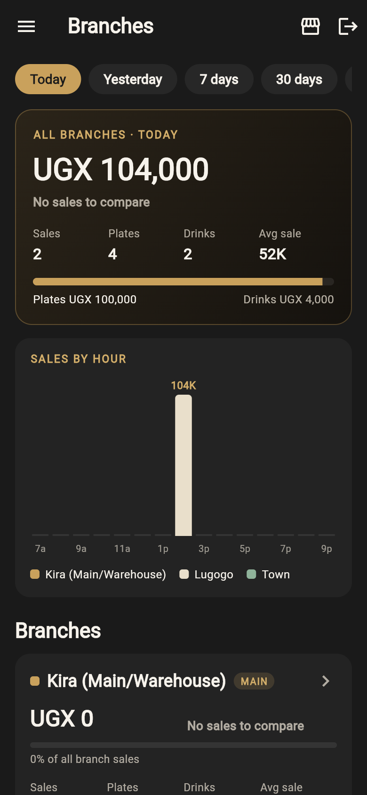
All branches for today.
8.2 One branch in detailOwner · Store manager
Tap a branch card. You see, for the chosen period:
How customers paid: cash, MoMo, Airtel, account, LPO.
Sales by staff: each person's takings and plates.
Drinks sold: how many of each.
Stock: items to re-order with their levels, deliveries received, deliveries that came short, and deliveries still waiting to be confirmed.
Stock used and the Latest sales with time, person and payment method.
A store manager sees the same report for their own branch only, from the chart icon at the top of their screen.
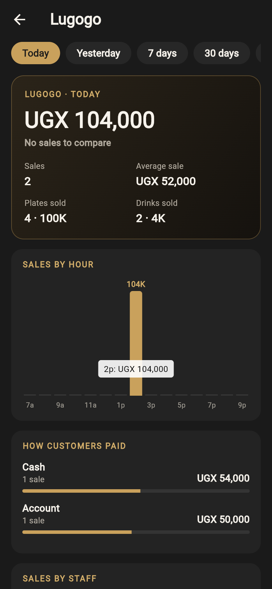
Lugogo, today.
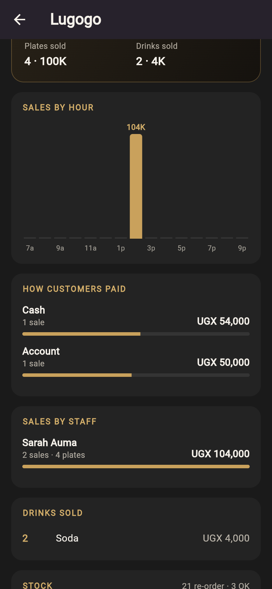
Further down: staff, drinks, stock.
8.3 DashboardOwner
Dashboard shows today's total across branches, plates sold, money owed on credit accounts and the low-stock alerts, grouped by branch. Tap a branch to open its list. Out means none left; Low means some left but at or below the level.
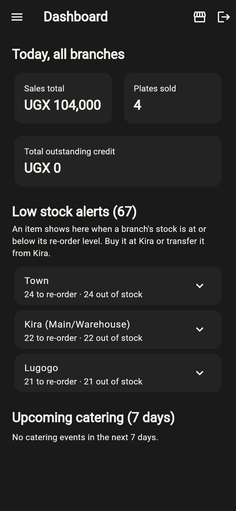
Dashboard.
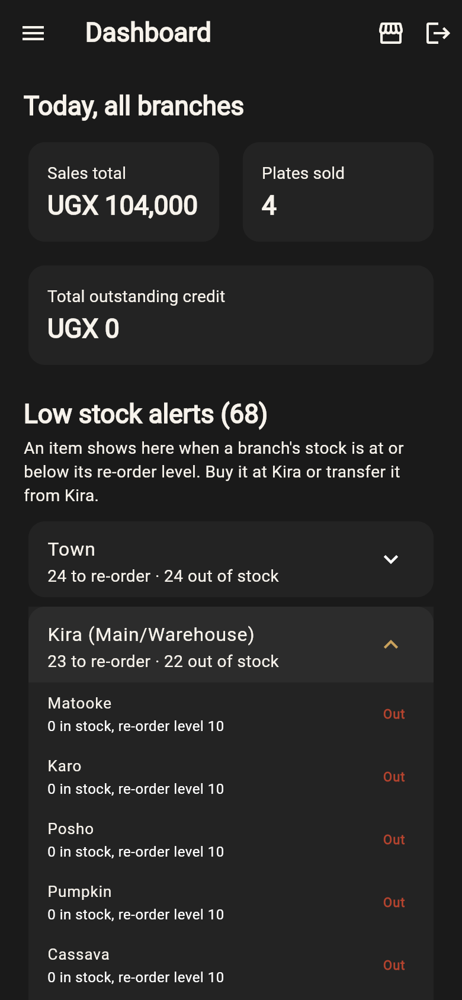
Kira's alerts opened.
9. Problems and answers
I bought stock but it still says Re-Order.
See chapter 4. Stock is counted per branch: buying at Kira fills Kira only, and the level may be higher than what you bought.
I cannot sell.
The owner's menu has no Sell screen. Sign in as a cashier or store manager. The owner can make one in Settings → Users (2.1). If a cashier cannot sell, check that the plate price and drink prices exist and that the phone has a connection.
An item I need is missing from a list.
Add it with Add a new item (3.2).
It says only some amount is available when I send a transfer.
Kira has less than you asked for. Record the purchase first (3.1), or send a smaller amount.
A delivery does not appear under Incoming Transfers.
It was sent to a different branch, or it has already been confirmed. Check Stocking → History as the owner.
A sale on account was refused.
A prepaid customer does not have enough money, or a credit customer would pass their limit. Take a deposit (6.2) or ask the owner to raise the limit.
It says it could not reach the server.
The phone has no internet. Reconnect and try again. Check that the sale did not already go through in My Day before you repeat it.
A number looks out of date.
Open the screen again or pull the list down. Screens show the figures from when they were opened.
I forgot my password.
Ask the owner to set a new one (1.1). If the owner forgets theirs, contact Thirdsan Enterprises.
The steps above were run, in order, through the real Cream app on a new system: setting up staff, buying at Kira, adding an item, sending a transfer, confirming it with a shortfall, buying drinks at a branch, recording use, selling for cash and on account, taking a deposit, changing the plate price, resetting a password, adding a branch, and reading the owner's reports. The same journey also runs as an automated test on the server, so the system's rules (stock, transfers, prices, account limits) are checked on every change.
Lists in the app show up to 500 items, users and customers, and up to 100 of the latest sales, movements and transfers.